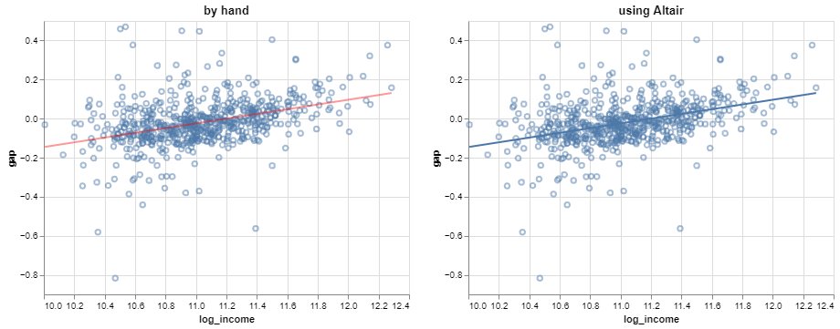

import numpy as np
import pandas as pd
import altair as alt
import statsmodels.api as sm
from sklearn.linear_model import LinearRegression
from scipy.stats import norm
from scipy import stats
alt.data_transformers.disable_max_rows()
# import grade-aggregated seda data from hw2
seda = pd.read_csv('data/seda.csv')
# filter to math and remove NaNs
regdata = seda[seda.subject == 'math'].dropna().drop(columns = 'subject').set_index('id')Simple linear regression
From last time
- statistical models are probabilistic represenations of data generating processes
- some randomness must be present (usually from sampling) for this to be sensible
- regression models relate a variable of interest to one or more other ‘explanatory’ variables and consist of:
- a distribution for the variable of interest
- expression(s) for the distribution’s parameters in terms of the explanatory variable(s)
- for linear regression, the mean of the response is a linear function of the explanatory variable(s)
- ‘simple’ if one explanatory variable
- ‘multiple’ if many explanatory variables
- ‘multivariate’ if many variables of interest
From last time
A simple linear model is \(y_i = a x_i + b + e_i\) where \(e_i\) are ‘residuals’ – leftover quantities.
The least squares line minimizes the sum of squared residuals \(\sum_i e_i^2\) – i.e., the residual variance, assuming the line passes through the mean.
\[ \begin{align*} b &= \frac{S_x}{S_y} \text{corr}(x, y) \\ a &= \bar{y} - b\bar{x} \end{align*} \]
Visualizing the line
Verifying that the line plotted on a prediction grid (left) matches the regression transform from Altair (right):

Not a statistical model, yet
The least squares line is simply an algebraic transformation of the data – technically, a projection.
This is not yet a statistical model according to our definition, since there is no probability distribution involved.
We can change that by considering the residuals to be random.
Residual distribution
Have a look at the histogram of the residuals (with a KDE curve):

Does this look like any probability density function you encountered in 120A?
Residual distribution
The residual distribution is pretty well-approximated by the normal or Gaussian distribution:

The error model
This phenomenon – nearly normal residuals – is pretty common in practice.
So a standard distributional model for the residuals is that they are independent normal random variables. This is written as:
\[ e_i \stackrel{iid}{\sim} N\left(0, \sigma^2\right) \]
This is an important modification because it induces a probability distribution on \(y_i\).
The simple linear regression model
Now we’re in a position to state the simple linear regression model:
\[ y_i = \beta_0 + \beta_1 x_i + \epsilon_i \quad \begin{cases} i = 1, \dots, n \\ \epsilon_i \sim N\left(0,\sigma^2\right) \end{cases} \]
- \(y_i\) is the response variable
- \(x_i\) is the explanatory variable
- \(\epsilon_i\) is the random error
- \(\beta_0, \beta_1, \sigma^2\) are the model parameters
- \(\beta_0\) is the intercept
- \(\beta_1\) is the coefficient
- \(\sigma^2\) is the error variance
Properties of the normal distribution
As a refresher from 120A, if \(X \sim N(\mu, \sigma^2)\) then:
- (Mean) \(\mathbb{E}X = \mu\)
- (Variance) \(\text{var}X = \sigma^2\)
- (Linearity) For constants \(a, b\), \(aX + b \sim N(a\mu + b, a^2\sigma^2)\)
Model implications
Treating the error term as random has a number of implications that follow from the properties of the normal distribution:
(Normality) The response is a normal random variable: \(y_i \sim N\left(\beta_0 + \beta_1 x_i, \sigma^2\right)\)
(Linearity) The mean response is linear in \(X\): \(\mathbb{E}y_i = \beta_0 + \beta_1 x_i\)
(Constant variance) The response has variance: \(\text{var}y_i = \sigma^2\)
(Independence) The observations are independent (because the errors are): \(y_i \perp y_j\)
These are the assumptions of the simple linear regression model.
Aside: other error distributions, or conditions that don’t assume a specific distribution, are possible.
Estimates
You’ve already seen how to compute the least squares estimates of \(\beta_0, \beta_1\) – these are no different when the errors are random.
Estimates are typically denoted by the corresponding paramater with a hat:
\[ \begin{align*} \hat{\beta}_1 &= \frac{ \sum_i (x_i - \bar{x})(y_i - \bar{y}) }{ \sum_i (x_i - \bar{x})^2 } \\ \hat{\beta}_0 &= \bar{y} - \hat{\beta}_1 \bar{x} \end{align*} \]
An estimate of the error variance is:
\[ \hat{\sigma}^2 = \frac{1}{n - 2} \sum_{i = 1}^n \left(y_i - \hat{\beta}_0 - \hat{\beta}_1 x_i\right)^2 \]
Estimates (matrix form)
These estimates can be expressed in matrix form as:
\[ \begin{align*} \hat{\beta} &= (\mathbf{X'X})^{-1}\mathbf{X'y} \\ \hat{\sigma}^2 &= \frac{1}{n - 2}\left(\mathbf{y} - \mathbf{X}\hat{\beta}\right)'\left(\mathbf{y} - \mathbf{X}\hat{\beta}\right) \end{align*} \]
Fitted values and residuals
The projections of the data points onto the line are the estimated values of the response variable for each data point.
These are known as fitted values and denoted \(\hat{y}_i\):
\[ \hat{y}_i = \hat{\beta}_0 + \hat{\beta}_1 x_i \]
Then, the differences between observed and fitted values give the model residuals:
\[ e_i = y_i - \hat{y}_i \]
Computations
# retrieve data
x = sm.tools.add_constant(regdata.log_income.values)
y = regdata.gap.values
# fit regression model
slr = sm.OLS(endog = y, exog = x)
# estimates
beta_hat = slr.fit().params
# fitted values
fitted = slr.fit().fittedvalues
# residuals
resids = slr.fit().resid
# error variance estimate
sigmasq_hat = slr.fit().scale
print('coefficient estimates: ', beta_hat)
print('error variance estimate: ', sigmasq_hat)coefficient estimates: [-1.35616996 0.12105696]
error variance estimate: 0.013171170616137325Parameter interpretations: intercept
The intercept \(\beta_0\) represents the mean response \(\mathbb{E}y_i\) when \(x_i = 0\).
In the SEDA example:
For districts with a log median income of 0, the mean achievement gap between boys and girls is estimated to be -1.356 standard deviations from the national average.
Not incorrect, but awkward:
- log median income is not a natural quantity
- the sign is confusing
Parameter interpretations: intercept
Better:
For school districts with a median income of 1 dollar, the mean achievement gap is estimated to favor girls by 1.356 standard deviations from the national average.
- Check your understanding:
- why 1 dollar and not 0 dollars?
- why not -1.356?
- Not of particular interest here because no districts have a median income of 1 USD.
Parameter interpretations: slope
The slope \(\beta_1\) represents the change in mean response \(\mathbb{E}y_i\) per unit change in \(x_i\).
In the SEDA example:
Each increase of log median income by 1 is associated with an estimated increase in mean achievement gap of 0.121 standard deviations from the national average in favor of boys.
Not incorrect, but a bit awkward – how much is a change in log median income of 1 unit?
Parameter interpretations: slope
Better:
Every doubling of median income is associated with an estimated increase in the mean achievement gap of 0.084 standard deviations from the national average in favor of boys.
- Why doubling??
- Hint: \(\hat{\beta}_1\log (2x) = \hat{\beta}_1\log x + \hat{\beta}_1 \log 2\)
Parameter interpretations: error variance
The error variance \(\sigma^2\) represents the variability in the response \(y\) after accounting for the explanatory variable \(x\).
In the SEDA example:
After adjusting for log median income, the gender achievement gap varies among districts by an estimated 0.11 standard deviations from the national average.
Note that \(\hat{\sigma}\) is reported for interpretation on the original scale, rather than \(\hat{\sigma}^2\).
Parameter interpretations: error variance
Compare the estimated ‘raw’ variance in gender gap with the estimated residual variance after accounting for log median income:
print('raw variance: ', y.var(ddof = 1))
print('estimated residual variance: ', sigmasq_hat)raw variance: 0.015355417268162816
estimated residual variance: 0.013171170616137325The estimated variability in achievement gap diminishes a little after adjusting for log median income. The relative reduction is:
\[ \frac{\hat{\sigma}^2_\text{raw} - \hat{\sigma}^2}{\hat{\sigma}^2_\text{raw}} \]
In the SEDA example, the reduction was about 14%:
print('relative reduction in variance: ',
(y.var(ddof = 1) - sigmasq_hat)/y.var(ddof = 1)
)relative reduction in variance: 0.14224599787035444Parameter interpretations: variance
A closely related quantity is the R-squared statistic, which simply adjusts the denominator of the error variance estimate:
\[ \frac{\hat{\sigma}^2_\text{raw} - \frac{n - 2}{n - 1}\hat{\sigma}^2}{\hat{\sigma}^2_\text{raw}} \]
- used as a measure of fit
- interpreted as the proportion of variation in the response explained by the model
General parameter interpretations
There is some general language for interpreting the parameter estimates:
(Intercept) When [\(x_i = 0\)] the mean [response variable] is estimated to be [\(\hat{\beta}_0\) units].
(Slope) Every [one-unit increase in \(x_i\)] is associated with an estimated change in mean [response variable] of [\(\hat{\beta}_1\) units].
(Error variance) After adjusting for [explanatory variable], the remaining variability in [response variable] is an estimated [\(\hat{\sigma}\) units] about the mean.
You can use this standard language as a formulaic template for interpreting estimated parameters.
Centering the explanatory variable
If we want the intercept to be meaningful, we could center the explanatory variable and instead fit:
\[ y_i = \beta_0 + \beta_1 (x_i - \bar{x}) + \epsilon_i \]
# center log median income
log_income_ctr = (regdata.log_income - regdata.log_income.mean()).values
# form x matrix
x_ctr = sm.tools.add_constant(log_income_ctr)
# refit model
slr_ctr = sm.OLS(endog = y, exog = x_ctr)
beta_hat_ctr = slr_ctr.fit().params
# display parameter estimates
print('coefficient estimates: ', beta_hat_ctr)
print('error variance estimate: ', slr_ctr.fit().scale)coefficient estimates: [-0.02105724 0.12105696]
error variance estimate: 0.013171170616137325For a district with average log median income, the estimated achievement gap favors boys by 0.021 standard deviations from the national average.
- note that this is just a location shift so other estimates are unchanged
- can recover the original intercept estimate as \(\hat{\beta}_0 - \hat{\beta}_1 \bar{x}\)
beta_hat_ctr[0] - beta_hat_ctr[1]*regdata.log_income.mean()-1.3561699570330032Other transformations
We could seek to adjust the model so that the intercept is interpreted as the gap at the district with the smallest median income:
\[ y_i = \beta_0 + \beta_1 \log\left(x_i - x_{(1)} + 1 \right), \quad x_i: \text{median income for district } i \]
But this changes the meaning of the other model terms:
- \(\beta_1\) represents the change in mean gap associated with multiplicative changes in the amount by which a district’s median income exceeds that of the poorest district
- \(\sigma^2\) is the variability of the gap after adjusting for the log of the difference in median income from the median income of the poorest district
Other transformations
Unsurprisingly, estimates are not invariant under arbitrary transformations, so if the meanings of the other parameters change, then so do the estimates:
# center log median income
income = np.exp(regdata.log_income)
income_shifted = income - income.min()
log_income_shifted = np.log(income_shifted + 1)
# form x matrix
x_shifted = sm.tools.add_constant(log_income_shifted)
# refit model
slr_shifted = sm.OLS(endog = y, exog = x_shifted)
beta_hat_shifted = slr_shifted.fit().params
# display parameter estimates
print('coefficient estimates: ', beta_hat_shifted)
print('error variance estimate: ', slr_shifted.fit().scale)coefficient estimates: const -0.544166
log_income 0.049851
dtype: float64
error variance estimate: 0.013904979364206385Note also it’s not possible to express the old parameters as functions of the new parameters; this is a fundamentally different model.
Uncertainty quantification
A great benefit of the simple linear regression model relative to a best-fit line is that the error variance estimate allows for uncertainty quantification.
What that means is that one can describe precisely:
variation in the estimates (i.e., estimated model reliability);
variation in predictions made using the estimated model (i.e., predictive reliability).
Understanding variation in estimates
What would happen to the estimates if they were computed from a different sample?
We can explore this idea a little by calculating least squares estimates from several distinct subsamples of the dataset.

The lines are pretty similar, but they change a bit from subsample to subsample.
Variance of least squares
How much should one expect the estimates to change depending on the data they are fit to?
It can be shown that the variances and covariance of the estimates are:
\[ \left[\begin{array}{cc} \text{var}\hat{\beta}_0 & \text{cov}\left(\hat{\beta}_0, \hat{\beta}_1\right) \\ \text{cov}\left(\hat{\beta}_0, \hat{\beta}_1\right) &\text{var}\hat{\beta}_1 \end{array}\right] = \sigma^2 \left(\mathbf{X'X}\right)^{-1} \]
Bear in mind that the randomness comes from the \(\epsilon_i\) model term.
- these quantify how much the parameters vary across collections of \(y_i\)’s measured at exactly the same values of \(x_i\)
- these are not variances of the parameters; \(\beta_0\) and \(\beta_1\) are constants, i.e., not random
- they are also not variances of the estimates – e.g., \(0.121\) is yet another constant
Standard errors
So the variances can be estimated by plugging in \(\color{red}{\hat{\sigma}^2}\) for \(\sigma\) in the variance-covariance matrix from the previous slide.
The estimated standard deviations are known as standard errors:
\[ \text{SE}(\hat{\beta}_0) = \sqrt{\color{red}{\hat{\sigma}^2}(\mathbf{X'X})^{-1}_{11}} \qquad\text{and}\qquad \text{SE}(\hat{\beta}_1) = \sqrt{\color{red}{\hat{\sigma}^2}(\mathbf{X'X})^{-1}_{22}} \]
Computations and intepretations
The estimated variance-covariance of the least squares estimates is computed by the .cov_params() method:
slr.fit().cov_params()array([[ 0.01708179, -0.00154692],
[-0.00154692, 0.00014026]])- the intercept estimate varies by an estimated \(\sqrt{0.0171} = 0.131\) across datasets, with \(x_i\) fixed
- the slope estimate varies by an estimated \(\sqrt{0.00014} = 0.0118\) across datasets, with \(x_i\) fixed
Confidence intervals
About 95% of the time, the true values \(\beta_0, \beta_1\) will be within 2SE of any particular estimates \(\hat{\beta}_0, \hat{\beta}_1\).
The intervals \(\hat{\beta}_j \pm 2 SE(\hat{\beta}_j)\) provide ranges of possible values for the true values \(\beta_j\):
slr.fit().conf_int()array([[-1.61283063, -1.09950928],
[ 0.09779946, 0.14431446]])This supports two important inferences:
- with 95% confidence, the intercept is estimated to be between -1.613 and -1.010
- with 95% confidence, the slope is estimated to be between 0.098 and 0.144
And the width of those intervals conveys a sense of the uncertainty associated with the estimates.
Visualizing uncertainty
It’s fairly common practice to add a band around the plotted line to indicate estimated variability.

- represents the uncertainty/variability of the parameter estimates, i.e., of the trend line
- does not represent the uncertainty/variability of the observations – note the spread of data is considerably broader than the uncertainty band